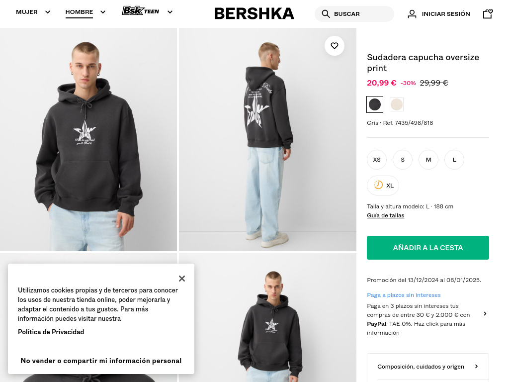
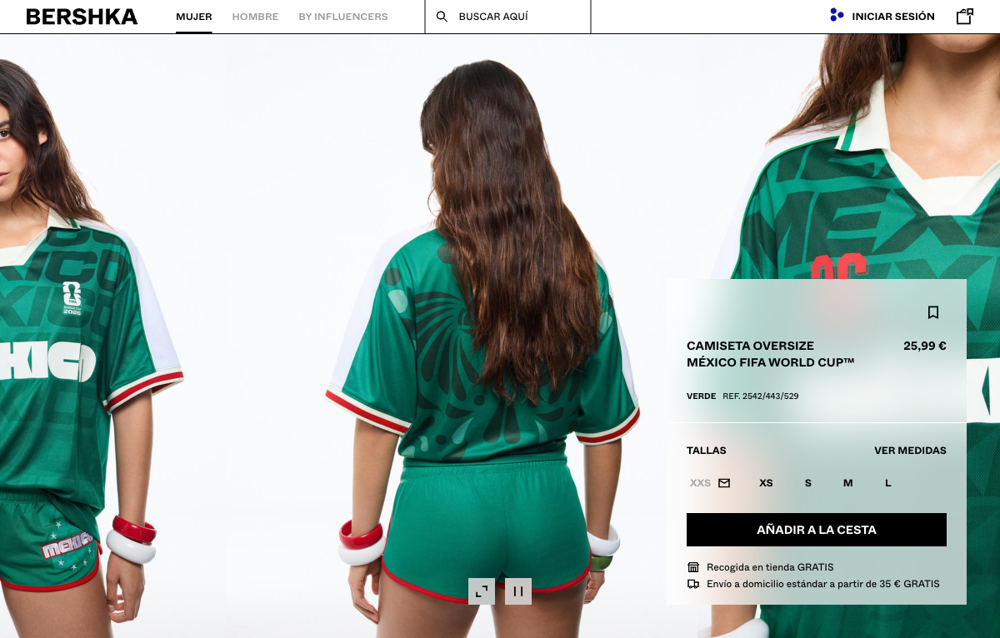
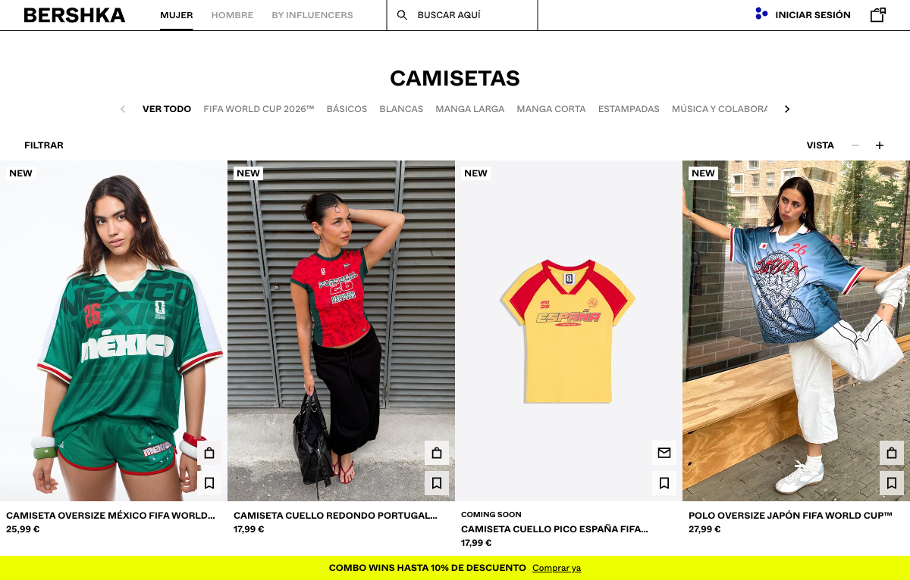

El grid archivado de enero 2025 no renderiza (imágenes/API no capturadas), así que la wishlist en PLP se confirma por código, no por captura. El loginModal delata el flujo antiguo de login.
La primera vez que guardabas, la wishlist apoyaba el flujo en un loginModal. Sin cuenta, más fricción para empezar a guardar.
El marcador guarda al instante sin sesión y muestra un aviso no bloqueante: invita a crear cuenta para conservar los favoritos, sin cortar la acción.
aria-label dice “Añadir a la lista de deseos”, pero el aviso los llama “favoritos”: pequeña inconsistencia de naming.La lista de deseos no es nueva, pero el rediseño la hace más accesible: un icono unificado (marcador), bien colocado, y guardado sin obligar a registrarse.
Fuentes: bershka.com (producción, jun 2026) · Wayback Machine y archive.today (dic 2024 – ene 2025). El rediseño se introdujo en algún punto entre ene 2025 y jun 2026 (fecha exacta sin acotar).